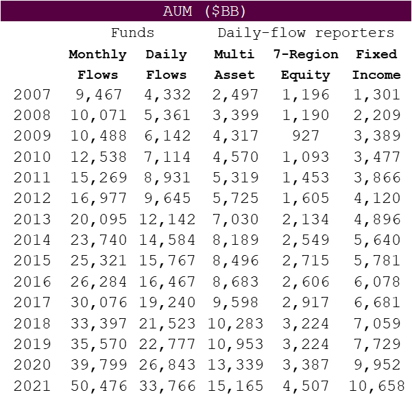

Chapter 4 Multi Asset Strategy
The main focus of this proof of concept is to understand the methodology behind the Multi Asset Strategy. In this section you will be shown how to use EPFR data to construct a signal and extract value. (add more to intro)
4.1 Overview
- EPFR’s Multi Asset Strategy is based on percentage flow into asset classes.
- Daily percentage flow is compounded over a trailing twenty day period.
- The top fifth of asset classes, in terms of twenty day percentage flows, outperforms the bottom fifth by 10% per year.
- The strategy works well whether you consider only equity or fixed income asset classes.
4.1.1 Downloading Data
The Multi Asset strategy uses data from EPFR’s Daily Multi Asset files (MultiAsset-Rgn-daily.csv and MultiAsset-FI-daily.csv can be found on ftp..). These files contain daily flow data for different asset classes listed below and are updated daily at 5:00 PM est. with a T+1 day lag.
- 7 Global Equity Regions:
- Asia ex Japan
- Europe ex UK
- Japan
- Latin America
- Pacific ex Japan
- United Kingdom
- United States
- 10 Fixed Income:
- Global Emerging Markets
- Western Europe Bond
- High Yield Bond
- Floating Rate Funds
- USA Treasuries -
- USA Treasuries - Long
- USA Treasuries - Short
- Cash
- USA Muni’s
- Global Fixed Income
4.2 Methodology
- We calculate the flow into an asset class as the sum of flows into funds that invest in that asset class.
- We calculate the assets held in an asset class as the sum of the assets of funds that invest in that asset class.
- For equity funds, these sums are computed only across active funds.
- Divide flow into by assets held in an asset class to get daily percentage flow into that asset class.
- When using both equity and fixed income assets classes (i.e. Multi asset), regress twenty day beta versus MSCI ACWI out of twenty day flow percentage.
As you see in the figure below of EPFR’s coverage over time, which is reported at the end of July each year, there is good coverage available to be back testing with.

4.2.2 Strategy Implementation
- For each asset class, compound daily percentage flow over the trailing twenty days (lookback).
- Rank asset classes into five equal baskets based on twenty day percentage flow.
- Go long the top fifth and short the bottom fifth.
- Re-balance weekly.
4.2.2.1 Defining Variables
idx <- "Multi" # Multi/Rgn/FI
strats <- c("Rgn", "FI")
fldrs <- paste(fcn.dir(), "New Model Concept", strats, "FloMo\\csv", sep = "\\")
lookback <- 20 # FLOW WINDOW (IN WEEKDAYS) - 20 day look back period
delay <- 2 # DELAY IN KNOWING DATA (IN WEEKDAYS) - data takes time to have
doW <- 5 # TRADE ON FRIDAYS
hz <- c(5, 10, 20, 45, 65, 130) # RETURN HORIZON (IN WEEKDAYS)4.2.2.2 Compounding Daily Percentage Flow
Import the multi asset files for equity and fixed income asset classes, and then use function from EPFR library to compound flows.
x <- multi.asset(strat.path(paste("MultiAsset", strats, sep = "-"), "daily")) # GET FLOW PERCENTAGE
x <- compound.flows(x, lookback, 1, F) # COMPOUND FLOWS4.2.2.3 Return File
For this demonstration we will use files that have calculated returns using EPFR daily flow data for both equity and fixed income asset classes. To do this we use the following equation for each weekday \(t\):
\[\text{Fund Return}_t = \frac{\sum \text{Portfolio Change}}{\sum \text{Assets Start}}\]
We will then import this file and use functions from the EPFR library which will easily translate these returns to a total return index.
#RGN RETURNS
y <- mat.read(paste(fcn.dir(), "New Model Concept\\Strategy Notebooks\\csv", "sql.1dFloMo.Rgn.csv", sep = "\\"))
y <- ret.to.idx(map.rname(y, dimnames(x)[[1]])) # CONVERT TO A TOTAL-RETURN INDEX
y <- ret.idx.gaps.fix(y)
#F.I. RETURNS
z <- mat.read(paste(fcn.dir(), "New Model Concept\\Strategy Notebooks\\csv", "sql.1dFloMo.FI.csv", sep = "\\"))
z <- ret.to.idx(map.rname(z, dimnames(y)[[1]])) # CONVERT TO A TOTAL-RETURN INDEX
#COMBINE RETURN FILES
y <- data.frame(y, z)[, dimnames(x)[[2]]] # FINAL TOTAL-RETURN INDEX TABLE
y <- y[max(simplify2array(lapply(y, function(x) {find.data(!is.na(x), T)}))):min(simplify2array(lapply(y, function(x) {find.data(!is.na(x), F)}))), ] # ENSURE ALL PIECES HAVE RETURN OVER THE SAME HORIZON Below shows the next steps to filter the return file that will be used in the strategy implementation.
if (idx == "Rgn") {
x <- x[, 1:7]
y <- y[, 1:7]
} else if (idx == "FI") {
x <- x[, 8:dim(x)[2]]
y <- y[, 8:dim(y)[2]]
} else {
z <- map.rname(portfolio.beta.wrapper(y, "ACWorld", lookback), dimnames(x)[[1]])
for (j in 1:dim(x)[1]) x[j, ] <- portfolio.residual(unlist(x[j, ]), unlist(z[j, ]))
} 4.2.3 Preformance
Next, the bbk() function from EPFR’s library is used to show the performance of this strategy.
bbk(x, y, 1, hz[1], 5, doW, T, 0, delay)$annSumm # DISPLAY CALENDAR-YEAR RETURNS fcn <- function(retW) {as.matrix(bbk(x, y, 1, retW, 5, doW, T, 0, delay)$summ)} # DEFINE SUMMARY FUNCTION
mat.ex.array3d(sapply(split(hz, hz), fcn, simplify = "array")) # WRITE SUMMARIES4.2.3.1 Excel Models
add to this section, use embedded tables or take format from presentation
Flow percentage
Flow percentage compounded over trailing 20 days
# EXCEL MODEL
z <- bbk(x, y, 1, hz[1], 5, doW, T, 0, delay)
mat.to.xlModel(z[["raw"]]) # FOR MULTI-ASSET, DO TWICE. ONCE WITH AND ONCE WITHOUT BETA NEUTRALIZATION. MAKE SURE LAST TRADE DATE IS THE SAME AS ORTH!!Returns
One-week ahead return (Friday to Friday)
mat.to.xlModel(z[["raw.fwd.rets"]])